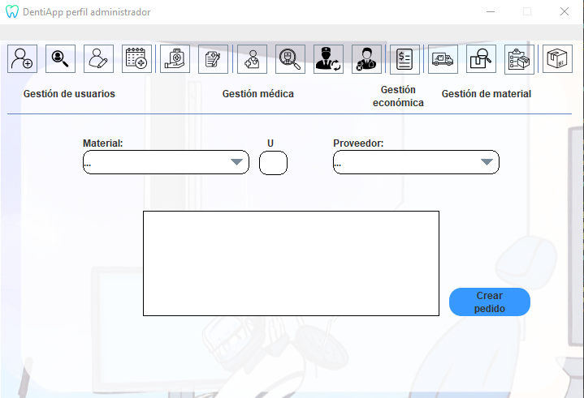

Ayuda: Crear pedido
Los siguientes pasos le guiarán a través del proceso de creación
de un pedido de material a un proveedor:
- Añadir material al pedido: Desde la nueva pantalla,
busque el material que desea
agregar al pedido utilizando el campo de búsqueda provisto (Material).
- Especificar cantidad: Después de encontrar el material,
especifique la cantidad que
desea pedir en el campo provisto (u).
- Seleccione un Proveedor: Desde el menú desplegable,
escoja el proveedor al que desea
realizar el pedido (Proveedor).
- Enviar pedido: Una vez que haya agregado el material
deseado al pedido, el proveedor y
la cantidad, haga clic en el botón "Crear Pedido" para enviar
el pedido al proveedor.

Si tiene alguna pregunta o necesita ayuda adicional,
no dude en comunicarse con nosotros.